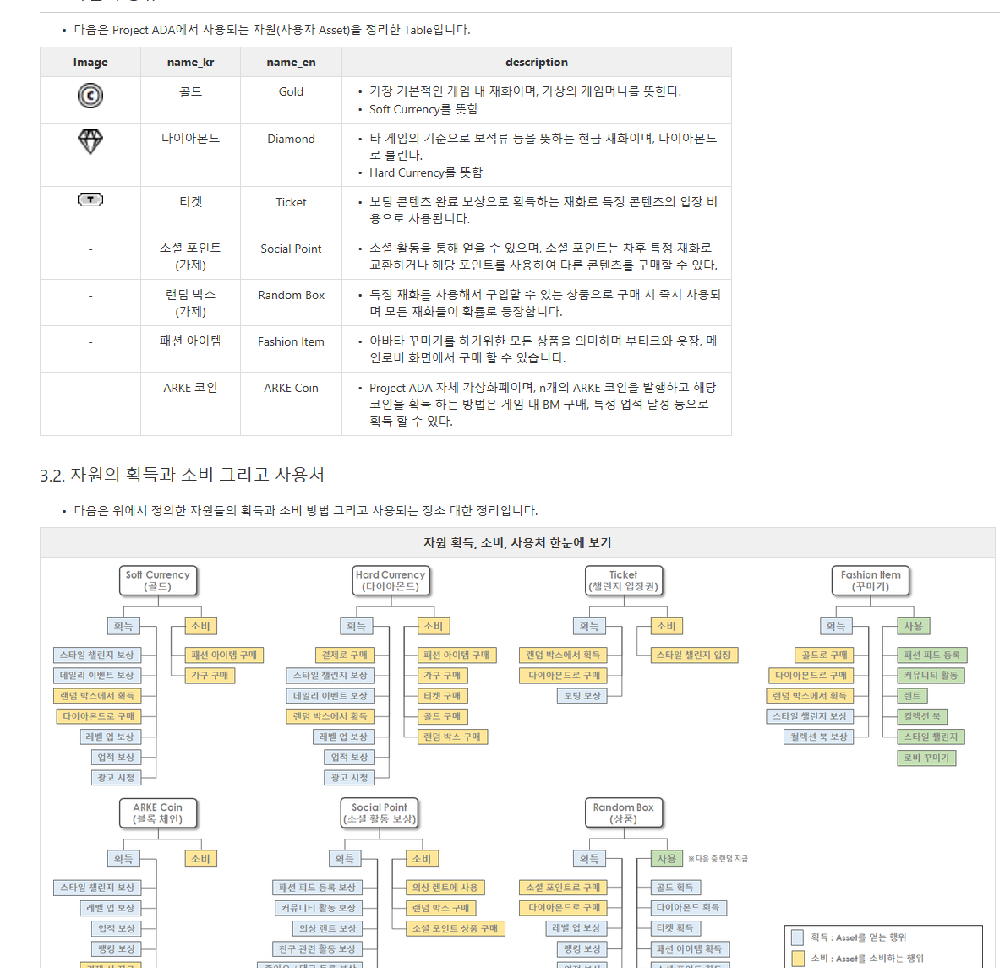
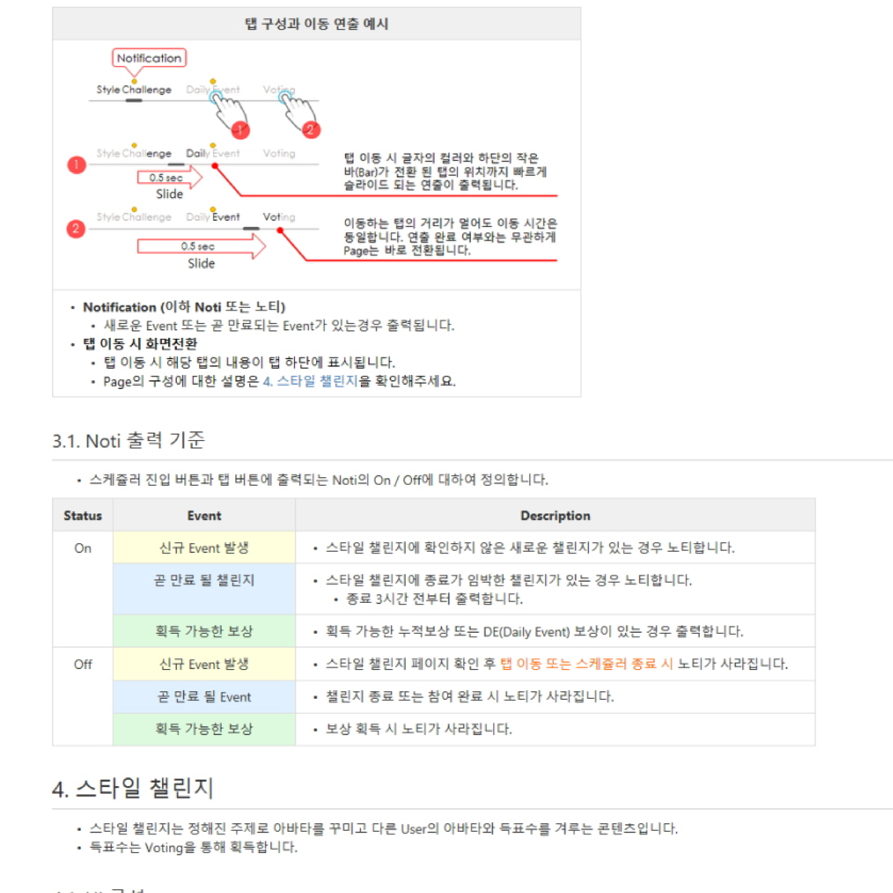
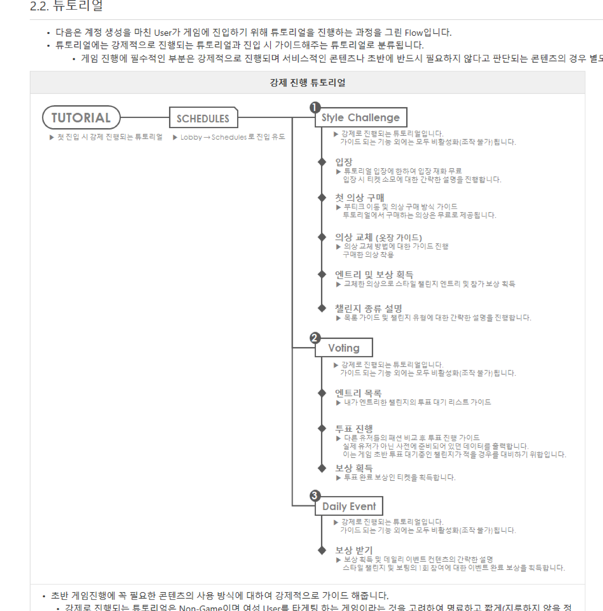
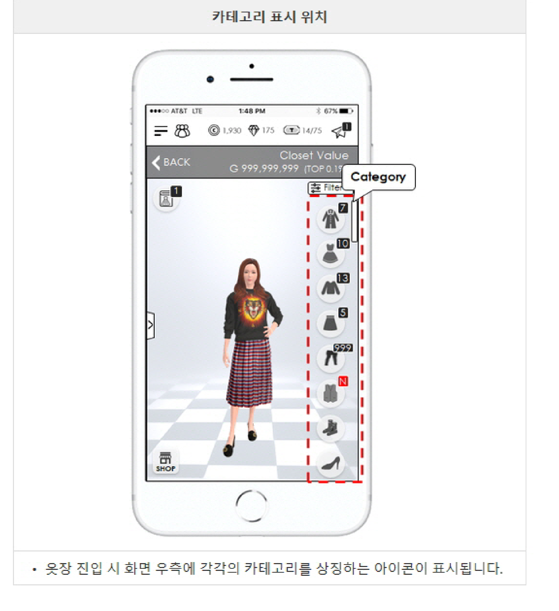
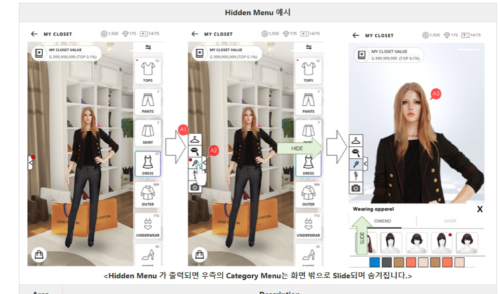
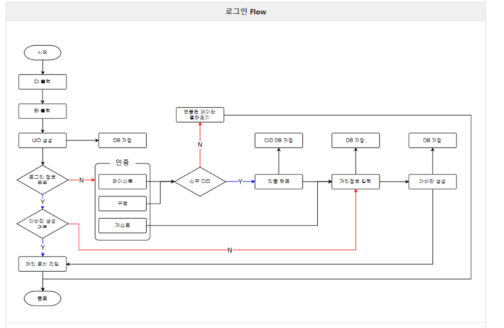
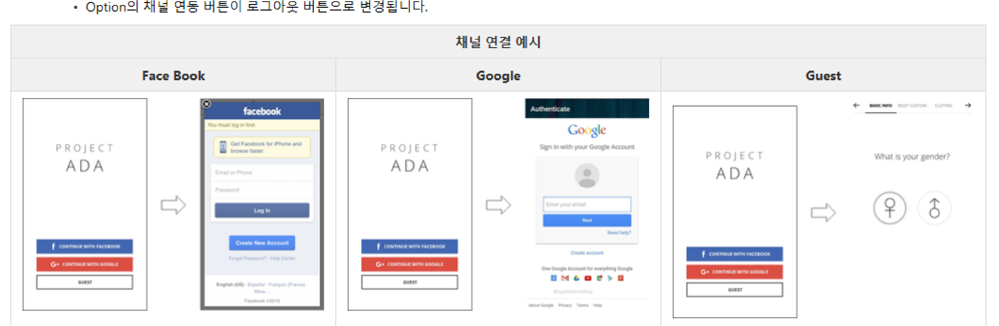
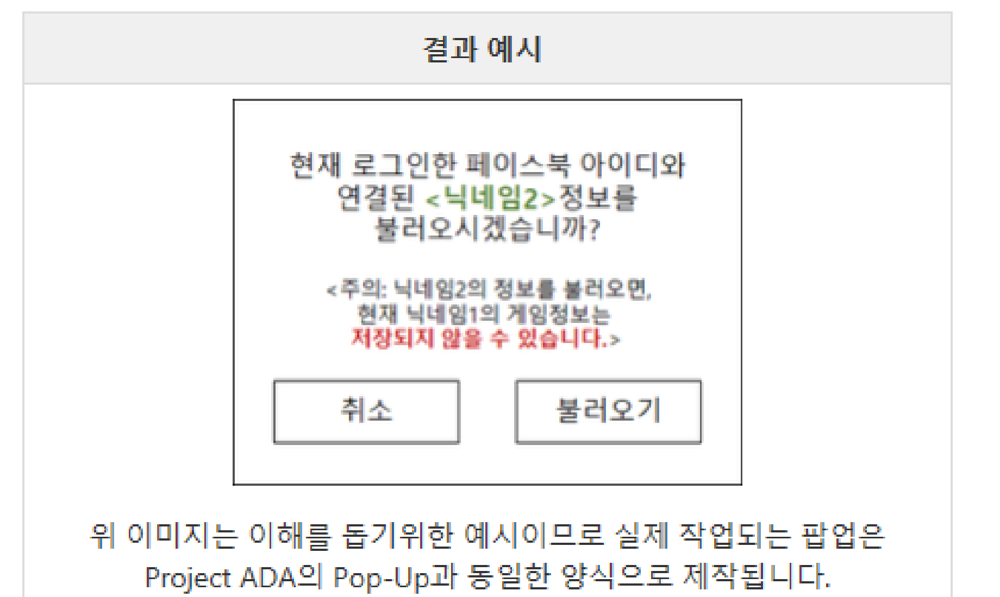

CAREER · FIT
FIT
2018.03 ~ 2018.07 · 기획팀 팀장 · Mobile Fashion Game Project ADA
콘텐츠·자원 순환구조 설계
Project ADA 전체에서 사용되는 재화 체계와 유저의 콘텐츠 소비 동선을 설계했습니다. 기본 재화인 골드·다이아몬드부터 보팅 참여로만 얻는 티켓, 자체 발행 가상화폐(ARKE Coin)까지 재화 각각의 성격을 정의하고, 어떤 콘텐츠에서 획득해 어디에 소비하는지를 한 장의 순환 구조도로 정리했습니다. 신규·기존 인력이 프로젝트의 재화 흐름을 빠르게 파악할 수 있도록 온보딩 자료로 쓰기 위해 작성한 문서입니다.
| 기본 재화 | 게임 내 가장 기본적인 무료·유료 재화인 Gold(Soft Currency), Diamond(Hard Currency) |
|---|---|
| 콘텐츠 연동 재화 | 특정 콘텐츠 참여를 유도하기 위한 목적성 재화로 설계한 Ticket(보팅 완료 보상으로만 획득, 스타일 챌린지 입장에 소비) |
| 자체 가상화폐 | 블록체인 기반으로 n개를 발행하는 ARKE Coin. 게임 내 BM 구매·업적 달성 등으로 획득하도록 설계 |
| 파생 재화 | Social Point(소셜 활동 보상), Random Box(확률형 상품), Fashion Item(꾸미기 아이템) 등 파생 재화의 획득처·소비처도 순환 구조도에 함께 정리 |
Play Time 기준으로 유저의 콘텐츠 이용 과정을 유입 → 정착 → 심화 3단계로 나누어 단계별로 필요한 콘텐츠와 자원 순환을 함께 설계했습니다.

7종 재화의 정의(위)와 재화별 획득·소비·사용처를 한눈에 정리한 순환 구조도(아래)
스케쥴러(퀘스트 허브) 설계
반복 참여형 콘텐츠인 스타일 챌린지·보팅·데일리 이벤트를 하나의 탭 구조로 묶은 '스케쥴러'를 설계했습니다. 보팅은 참여를 강제하는 대신, 스타일 챌린지 입장에 필요한 티켓을 보팅 완료 보상으로만 얻을 수 있게 만들어 강제성 없이 자발적 참여가 이어지도록 재화 순환을 설계했습니다.
| 탭 전환 연출 | 탭 이동 시 글자 컬러와 하단 바(Bar)가 0.5초간 전환된 탭 위치까지 슬라이드, 연출 완료 여부와 무관하게 Page는 즉시 전환되도록 규칙 확정 |
|---|---|
| Notification 규칙 | 신규 이벤트 발생·곧 만료될 이벤트·획득 가능한 보상 3개 상태의 On/Off 노출 조건을 표로 명세 |
| 신규 유저 튜토리얼 | 스타일 챌린지 → 보팅 → 데일리 이벤트 순서로 진행되는 강제 튜토리얼 Flow 설계. Non-Game 콘텐츠이자 여성 대상 게임임을 고려해 간결하게(지루하지 않게) 구성 |

탭 전환 연출 스펙(0.5초 슬라이드)과 Notification 출력 기준 정의

신규 유저 강제 진행 튜토리얼 Flow: 스타일 챌린지 → 보팅 → 데일리 이벤트
옷장(Closet) UX 설계
게임의 메인 콘텐츠인 아바타 꾸미기 UI '옷장'을 처음부터 설계하고, 실제 피드백을 받아 2018년 3월부터 6월까지 8차례에 걸쳐 반복 개선했습니다. 아바타 성별에 따라 카테고리 아이콘이 달라지는 구조, 보유 아이템 가치를 합산해 보여주는 Closet Value, 카테고리별 아이템 장착 Flow까지 핵심 UX 전반을 정의했습니다.
Hidden Menu 설계
Side 기능(장착 중인 아이템 모아보기, 메이크업, 헤어, 포즈, 사진 촬영)을 별도 화면 전환 없이 하나의 슬라이드 메뉴로 묶어, 카테고리 목록과 아바타 미리보기 사이를 오가며 쓸 수 있게 설계
| 기능 버튼 | Equip / Make up / Hair / Pose / Photo 5개 기능을 하단에서 슬라이드로 호출 |
|---|---|
| 펼치기 버튼 | Hidden Menu를 펼치거나 숨기는 토글. 펼쳐지면 우측 Category Menu는 화면 밖으로 슬라이드되며 자동으로 숨김 처리 |
| 성별 분기 | Avatar 성별에 따라 옷장 진입 시 노출되는 카테고리 종류·아이콘이 달라지도록 설계 |
| Closet Value | 보유 중인 옷장 아이템 가치의 총합과 상위 랭킹(TOP %)을 함께 표시해 수집 동기 부여 |

옷장 진입 화면: 카테고리 아이콘 배치와 Closet Value(보유 가치 총합) 표시

Hidden Menu 펼침 Flow: 기능 버튼 호출 → Category Menu 슬라이드 아웃 → 착용 아이템 미리보기
로그인 · 계정 연동 설계
Facebook·Google 소셜 로그인과 게스트 로그인을 지원하는 계정 시스템을 설계했습니다. 게임 자체 계정(UID)과 소셜 채널 계정(CID)을 분리하는 구조를 잡고, 채널을 연결·해제하는 과정에서 발생할 수 있는 계정 충돌 상황을 시나리오별로 정의했습니다.
CID 연결 시 충돌 처리
| 상황 | 내용 | 처리 방식 |
|---|---|---|
| UID와 CID의 최초 연결 | 앱 설치 후 최초 실행으로 발급받은 UID에, 다른 어떤 UID와도 연동된 적 없는 CID를 연결하는 경우 | CID 인증 성공 즉시 UID와 연결하고, 바로 개인정보 입력·아바타 생성 씬으로 이동 |
| 연결 해제 후 새 CID로 재연결 | 연결돼 있던 CID를 해제(로그아웃)하고, 다른 어떤 UID와도 연동되지 않은 새 CID로 연결하는 경우 | 처음부터 시작(신규 UID 생성 후 연동)할지, CID 연결을 취소할지 팝업으로 유저가 직접 선택하도록 설계 |
| 이미 다른 UID와 연결된 CID 연결 | 연결 해제 또는 게스트 상태에서, 다른 UID와 이미 연동돼 있는 CID로 연결을 시도하는 경우 | 인증된 CID에 연동된 기존 UID를 불러올지 취소할지 팝업 제공. 불러오면 현재 데이터가 저장되지 않을 수 있음을 명확히 고지하고, 불러올 대상의 닉네임을 반드시 노출 |
| 다중 접속 | 하나의 CID로 최대 3개 기기까지 접속을 허용하되 동시 접속은 차단하는 정책 | 다른 기기에서 접속이 감지되면 기존 클라이언트는 안내 팝업 후 접속을 종료하고 타이틀 화면으로 이동(계정 로그아웃은 아님) |

앱 실행부터 메인 로비 진입까지 전체 로그인 Flow

Facebook / Google / Guest 채널 연결 예시 목업

이미 다른 UID와 연동된 CID로 접속 시 안내 팝업 예시